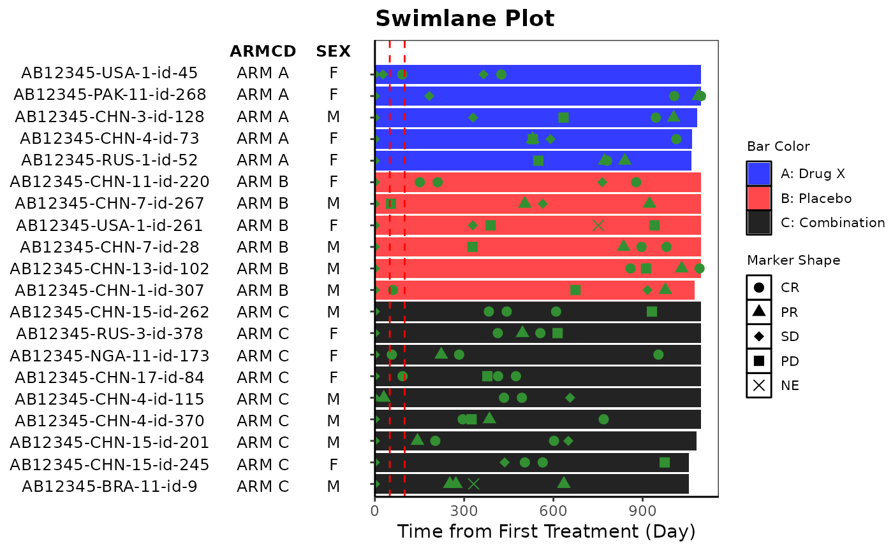
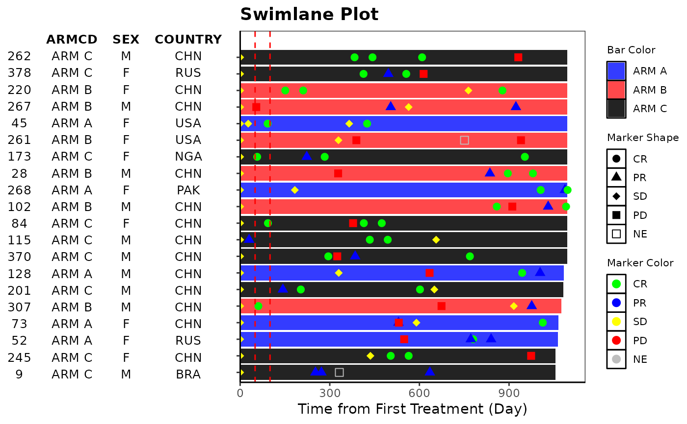

Swimlane plot is often used in Early Development (ED) and displays individual patient bar plot with markers of events and patient level annotation
Usage
g_swimlane(
bar_id,
bar_length,
sort_by = NULL,
col_by = NULL,
marker_id = NULL,
marker_pos = NULL,
marker_shape = NULL,
marker_shape_opt = NULL,
marker_color = NULL,
marker_color_opt = NULL,
anno_txt = NULL,
xref_line = NULL,
xtick_at = waiver(),
xlab,
title
)Arguments
- bar_id
vector of IDs to identify each bar
- bar_length
numeric vector to be plotted as length for each bar
- sort_by
vector to sort bars
- col_by
vector to color bars
- marker_id
vector of IDs to identify markers within each bar. Default is the same as bar_id.
- marker_pos
numeric vector to specify position for each marker point
- marker_shape
vector to specify shape for markers
- marker_shape_opt
aesthetic values to map shape values (named vector to map shape values to each name)
- marker_color
vector to specify color for markers
- marker_color_opt
aesthetic values to map shape values (named vector to map shape values to each name)
- anno_txt
dataframe of subject-level variables to be displayed as annotation on the left
- xref_line
numeric vector to plot reference lines
- xtick_at
optional break interval of bar length axis
- xlab
label for bar length
- title
string to be displayed as plot title
Author
Ting Qi (qit3) qit3@gene.com
Examples
# Example 1
library(dplyr)
ASL <- rADSL[1:20, ]
ARS <- ASL %>%
select(USUBJID) %>%
left_join(rADRS, "USUBJID") %>%
dplyr::filter(PARAMCD == "OVRINV")
ANL <- ASL %>% left_join(ARS, by = c("STUDYID", "USUBJID"))
anno_txt <- ASL[, c("ARMCD", "SEX")]
g_swimlane(
bar_id = ASL$USUBJID,
bar_length = ASL$TRTDURD,
sort_by = ASL$ARM,
col_by = ASL$ARM,
marker_id = ANL$USUBJID,
marker_pos = ANL$ADY,
marker_shape = ANL$AVALC,
marker_shape_opt = c("CR" = 16, "PR" = 17, "SD" = 18, "PD" = 15, "NE" = 4),
marker_color = NULL,
marker_color_opt = NULL,
anno_txt = anno_txt,
xref_line = c(50, 100),
xtick_at = waiver(),
xlab = "Time from First Treatment (Day)",
title = "Swimlane Plot"
)

# Example 2
library(dplyr)
ASL <- rADSL[1:20, ]
ARS <- rADRS
anno_txt_vars <- c("ARMCD", "SEX", "COUNTRY")
anno_txt <- ASL[, anno_txt_vars]
# markers from ARS
ARS <- ASL %>%
select(USUBJID) %>%
left_join(ARS, "USUBJID") %>%
dplyr::filter(PARAMCD == "OVRINV") %>%
select(USUBJID, ADY, AVALC)
# markers from ASL - discontinuation
ADS <- ASL %>%
dplyr::filter(EOSSTT == "Discontinued" | DCSREAS != "") %>%
select(USUBJID, EOSDY, DCSREAS) %>%
dplyr::rename(ADY = EOSDY, AVALC = DCSREAS)
# combine ARS with ADS records as one data for markers and join with ASL
ANL <- ASL %>%
inner_join(rbind(ARS, ADS), "USUBJID")
g_swimlane(
bar_id = sub(".*-", "", ASL$USUBJID),
bar_length = ASL$TRTDURD,
sort_by = NULL,
col_by = ASL$ARMCD,
marker_id = sub(".*-", "", ANL$USUBJID),
marker_pos = ANL$ADY,
marker_shape = ANL$AVALC,
marker_shape_opt <- c(
"CR" = 16, "PR" = 17, "SD" = 18, "PD" = 15, "NE" = 0,
"Adverse Event" = 7, "Death" = 8, "Physician Decision" = 9, "Progressive Disease" = 10,
"Symptomatic Deterioation" = 11, "Withdrawal by Subject" = 12
),
marker_color = ANL$AVALC,
marker_color_opt <- c(
"CR" = "green", "PR" = "blue", "SD" = "yellow", "PD" = "red",
"NE" = "grey", "Adverse Event" = "orange", "Death" = "black", "Physician Decision" = "navy",
"Progressive Disease" = "purple", "Symptomatic Deterioation" = "cyan",
"Withdrawal by Subject" = "darkred"
),
anno_txt = anno_txt,
xref_line = c(50, 100),
xtick_at = waiver(),
xlab = "Time from First Treatment (Day)",
title = "Swimlane Plot"
)
